유통관리사-2급 (2019-11-03 기출문제)
1과목: 유통물류일반
1. 생산자 및 판매자들이 당장 사용하지 않거나 팔리지 않는 원자재 및 완제품의 재고를 보유하는 이유로 옳지 않은 것은?
- 규모의 경제를 추구하기 위한 것이다.
- 운송비를 절감하기 위한 것이다.
- 안전재고(safety stocks)를 유지하기 위한 것이다.
- 헷징(hedging)을 방지하기 위한 것이다.
- 계절적 수요에 대응하기 위한 것이다.
(정답률: 58%)

2. 아래 글상자 내용 중 아웃소싱(outsourcing)의 성공조건을 모두 고른 것은?
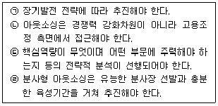
- ㉠, ㉡
- ㉠, ㉢
- ㉠, ㉡, ㉢
- ㉠, ㉢, ㉣
- ㉠, ㉡, ㉢, ㉣
(정답률: 69%)
3. 기업 경영진이 각 이해관계자들에게 지켜야 할 윤리에 대한 설명으로 가장 옳지 않은 것은?
- 주주에 대해서는 자금 횡령, 부당한 배당 금지
- 사원에 대해서는 사원 차별대우, 위험한 노동의 강요금지
- 고객에 대해서는 줄서는 곳에서 새치기, 공공물건의 독점사용, 품절가능 품목의 사재기 금지
- 타사에 대해서는 부당한 인재 스카우트, 기술노하우 절도 금지
- 사회일반에 대해서는 공해발생과 오염물질 투기, 분식회계 금지
(정답률: 74%)
4. 아래 글상자에서 주어진 정보를 활용하여 ㉠ 재발주점 방법을 적용할 경우의 안전재고와 ㉡ 정기적 발주방법을 적용할 경우(발주 cycle은 1개월)의 안전재고로 가장 옳은 것은?
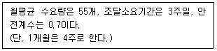
- ㉠ 약 29개, ㉡ 약 67개
- ㉠ 약 115개, ㉡ 약 115개
- ㉠ 약 12개, ㉡ 약 28개
- ㉠ 약 41개, ㉡ 약 220개
- ㉠ 약 165개, ㉡ 약 385개
(정답률: 35%)
5. 인적자원관리를 위한 직무확충(job enrichment)에 관한 내용으로 옳지 않은 것은?
- 근로자에게 과업을 수행하는데 필요한 권한을 위임한다.
- 종업원에게 과업수행 상의 유연성을 허용한다.
- 직무내용을 고도화해 직무의 질을 높인다.
- 종업원이 자신의 성과를 스스로 추적하고 측정하도록 한다.
- 동일한 유형의 더 많은 직무로 직무량을 확대한다.
(정답률: 73%)
6. 아래 글상자에서 의미하는 조직 내 집단갈등 해결을 위한 방법으로 옳은 것은?
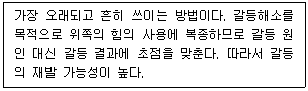
- 행동변화유도
- 조직구조개편
- 협상
- 권력을 이용한 갈등해결
- 갈등의 회피
(정답률: 88%)
7. 아래 글상자에서 설명하는 유통경로의 성과를 평가하는 각각의 차원으로 옳은 것은?
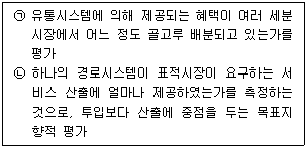
- ㉠ 형평성, ㉡ 효과성
- ㉠ 형평성, ㉡ 효율성
- ㉠ 효율성, ㉡ 효과성
- ㉠ 효율성, ㉡ 형평성
- ㉠ 효과성, ㉡ 형평성
(정답률: 60%)
8. 수평적 유통경로에 비해 수직적 유통경로가 갖는 특징만을 모두 고른 것은?
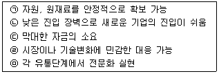
- ㉡, ㉣
- ㉠, ㉢
- ㉢, ㉣
- ㉠, ㉤
- ㉣, ㉤
(정답률: 56%)
9. 중개기관에 관한 설명으로 옳은 것은?
- 브로커는 제품이나 서비스 기업의 이름으로 사업을 하는 독립된 중개기관이다.
- 대리인은 구매자와 판매자 간의 거래를 중개하고, 계약기간 동안 계속적인 관계를 갖고 그에 대한 수수료를 받는다.
- 브로커는 독립된 중개기관으로서 구매자와 판매자 사이의 판매계약을 촉진한다.
- 브로커는 계약 시 지역권, 독점권, 판매수수료를 규정한다.
- 구매자를 위한 구매전문 중개상의 역할에는 제조사의 제품촉진, 제품소유, 위험공유의 서비스 제공이 포함된다.
(정답률: 61%)
10. 유통경로 구조결정 이론 중 연기·투기이론에 대한 설명으로 옳은 것은?
- 경로구성원 중 누가 비용우위를 갖고 마케팅 기능을 수행하는지에 따라 유통경로가 결정된다는 이론이다.
- 중간상들이 재고부담을 주문 발생시점까지 연기시키려고 하면 제조업자가 재고부담을 져야 하므로 경로 길이는 길어진다.
- 산업재 제조업자는 경로길이가 긴 유통경로를 통해 경로활동을 직접 수행한다.
- 소비재의 경우 소비자들은 다빈도 소량구매를 하므로 많은 중간상들이 재고위험을 부담한다.
- 중간상들이 제조업자 대신 투기적 재고를 유지하는 경우 경로길이가 짧아진다.
(정답률: 38%)
11. “전자문서 및 전자거래 기본법” (법률 제14907호, 2017. 10. 24., 일부개정)에서 정한 전자거래사업자의 일반적 준수사항으로 옳지 않은 것은?
- 소비자가 자신의 주문을 취소 또는 변경할 수 있는 절차의 마련
- 소비자의 불만과 요구사항을 신속하고 공정하게 처리하기 위한 절차의 마련
- 거래의 증명 등에 필요한 거래기록의 일정기간 보존
- 소비자가 쉽게 접근할 수 있는 물리적 공간의 마련
- 상호(법인인 경우 대표자의 성명 포함)와 그 밖에 자신에 관한 정보와 재화, 용역, 계약 조건 등에 관한 정확한 정보의 제공
(정답률: 79%)
12. 물류비를 산정하는 목적에 대한 설명으로 가장 옳지 않은 것은?
- 물류활동의 계획, 통제 및 평가를 위한 정보 제공
- 하역활동의 표준화 실현
- 물류활동에 관한 문제점 파악
- 물류활동의 규모 파악
- 원가관리를 위한 자료 제공
(정답률: 60%)
13. 주로 가스나 액체로 된 화물을 수송하는 방식으로서 수송과정의 제품 파손과 분실 가능성이 가장 적은 수송형태로 옳은 것은?
- 버디백(birdy back)
- 복합운송(multimodal transportation)
- 더블 스택 트레인(double stack train)
- 파이프라인(pipeline)
- 피쉬백(fishy back)
(정답률: 83%)
14. 손익계산서에 들어갈 내용으로 옳지 않은 것은?
- 당기순이익
- 법인세비용차감전 순이익
- 매출총이익
- 필요매출액
- 영업이익
(정답률: 73%)
15. 먼저 경청하며 설득과 대화로 업무를 추진하고, 조직에서 가장 가치 있는 자원은 사람이라고 생각하는 특성을 가진 리더십의 유형으로 옳은 것은?
- 카리스마적 리더십
- 서번트 리더십
- 변혁적 리더십
- 참여적 리더십
- 성취지향적 리더십
(정답률: 63%)
16. 유통경로의 성과 평가에 있어 정량적 척도로 옳지 않은 것은?
- 상표 내 경쟁의 정도
- 부실채권의 비율
- 새로운 중간상들의 수와 비율
- 재고부족 방지를 위한 비용
- 주문처리의 오류 횟수
(정답률: 73%)
17. BCG 매트릭스와 관련된 설명으로 옳지 않은 것은?(문제 오류로 가답안 발표시 2번으로 발표되었지만 확정답안 발표시 2, 3번이 정답처리 되었습니다. 여기서는 가답안인 2번을 누르시면 정답 처리 됩니다.)
- 시장 성장률과 상대적 시장 점유율의 높고 낮음을 기준으로 작성한다.
- 개의 영역은 시장은 커지고 있으나 경쟁력이 떨어져 수익을 올리지 못하는 상태다.
- 현금젖소는 시장이 더 이상 커지지 않으므로 현상 유지 전략이 필요하다.
- 물음표의 영역은 경쟁력이 확보될 수 있는 부분에 집중투자하는 전략이 필요하다.
- 별의 영역은 많은 투자 자금이 필요하다.
(정답률: 79%)
18. 기업 환경분석에서 모든 기업에 공통적으로 영향을 미치는 환경인 거시환경으로 옳지 않은 것은?
- 유통 경로에서 발생하는 경쟁자와 협력업자 환경
- 국가의 경제정책과 같은 경제적 환경
- 디지털, 네트워크와 같은 기술적 환경
- 문화와 가치관 같은 사회적 환경
- 각종 규제와 같은 법률적 환경
(정답률: 81%)
19. 시장커버리지 전략 중 하나인 선택적 유통과 관련된 설명으로 가장 옳은 것은?
- 가능한 한 많은 소매점에서 제품이 취급되는 것을 원하는 유통방법이다.
- 공격적인 유통이 가능하므로 집중적 유통이라고도 한다.
- 해당 점포는 지역 내의 독점권을 갖게 된다.
- 집중적 유통과 전속적 유통의 중간형태를 띠는 경로 커버리지 전략이다.
- 고객이 제품이나 서비스를 탐색하는데 많은 노력을 기꺼이 하는 경우에 적합한 방법이다.
(정답률: 58%)
20. 자재소요계획(MRP ; Material Requirement Planning)시스템에 대한 설명으로 옳지 않은 것은?
- 중간재 및 조립품 생산공정에 적합한 기법이다.
- 생산 프로세스에서 발생하는 문제점을 파악하는데 도움을 제공한다.
- 생산관리에 있어 원자재 주문 프로세스를 효율화 할 수 있다.
- MRP 입력정보에는 주일정계획, 자재명세파일, 재고기록파일 등이 있다.
- 생산라인 중단을 방지하기 위해 재고를 최고수준으로 유지하는데 도움을 준다.
(정답률: 72%)
21. JIT(Just-in-time)와 JIT(Just-in-time) Ⅱ와의 차이점에 대한 설명으로 옳지 않은 것은?
- JIT는 부품과 원자재를 원활히 공급받는데 초점을 두고, JITⅡ는 부품, 원부자재, 설비공구, 일반자재 등 모든 분야를 공급받는데 초점을 둔다.
- JIT가 개별적인 생산현장(plant floor)을 연결한 것이라면, JITⅡ는 공급체인 상의 파트너의 연결과 그 프로세스를 변화시키는 시스템이다.
- JIT는 자사 공장 내의 무가치한 활동을 감소ㆍ제거하는 데 주력하고, JITⅡ는 기업 간의 중복업무와 무가치한 활동을 감소ㆍ제거하는데 주력한다.
- JIT가 푸시(push)형인 MRP와 대비되는 풀(pull)형의 생산방식인데 비해, JITⅡ는 JIT와 MRP를 동시에 수용할 수 있는 기업 간의 운영체제를 의미한다.
- JIT가 기술, 영업, 개발을 동시화(synchronization)하여 물동량의 흐름을 강력히 통제하는데 비해, JITⅡ는 물동량의 흐름을 주된 개선대상으로 삼는다.
(정답률: 48%)
22. 주로 식료와 잡화류를 취급하는 도매상이며 재고수준에 대한 조언, 저장 방법에 대한 아이디어 제공, 선반 진열 업무 등을 소매상을 대신하여 직접 수행하는 도매상은?
- 현금무배달도매상(cash-and-carry wholesaler)
- 직송도매상(drop shipper)
- 트럭도매상(truck wholesaler)
- 진열도매상(rack jobber)
- 우편주문도매상(mail-order wholesaler)
(정답률: 82%)
23. 아래 글상자 내용은 리더가 보유하는 권력 중 하나인데, 무슨 권력에 대한 설명인가?
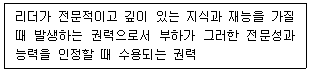
- 합법적 권력(legitimate power)
- 보상적 권력(reward power)
- 강압적 권력(coercive power)
- 준거적 권력(relevant power)
- 전문적 권력(expert power)
(정답률: 80%)
24. 딜(T. E. Deal)과 케네디(A. Kennedy)의 조직문화 유형으로 옳지 않은 것은?
- 거친 남성문화(the tough guy, macho culture)
- 열심히 일하고 노는 문화(work hard-play hard culture)
- 사운을 거는 문화(best your company culture)
- 과정 문화(the process culture)
- 핵조직 문화(atomized culture)
(정답률: 50%)
25. 소매상이 소비자에게 제공하는 기능으로 옳지 않은 것은?
- 소매상은 소비자에게 필요한 정보를 제공한다.
- 소매상은 소비자가 원하는 상품구색을 제공한다.
- 소매상은 자체의 신용정책을 통하여 소비자의 금융부담을 덜어주는 금융기능을 수행한다.
- 소매상은 소비자에게 애프터서비스의 제공과 제품의 배달, 설치, 사용방법의 교육 등과 같은 서비스를 제공한다.
- 소매상은 제조업자 제품의 일정 부분을 재고로 보유하여 재무부담을 덜어주는 기능을 수행한다.
(정답률: 70%)
2과목: 상권분석
26. 소매점의 매출을 결정하는 요인은, 크게 입지요인과 상권요인으로 구분할 수 있다. 다음 중 입지요인에 속하지 않는 것은?
- 시계성(視界性)
- 주지성(周知性)
- 시장의 규모
- 고객유도시설
- 동선(動線)
(정답률: 60%)
27. 동선(動線)에 대한 설명으로 가장 옳지 않은 것은?
- 경제적 사정으로 많은 자금이 필요한 주동선에 입지하기 어려운 점포는 부동선(副動線)을 중시한다.
- 주동선이란 자석입지(magnet)와 자석입지를 잇는 가장 기본이 되는 선을 말한다.
- 동선은 주동선, 부동선, 접근동선, 출근동선, 퇴근동선 등 다양한 기준으로 분류할 수 있다.
- 복수의 자석입지가 있는 경우의 동선을 부동선(副動線)이라 한다.
- 접근동선이란 동선으로의 접근정도를 가리키는 말이다.
(정답률: 71%)
28. 소비자 C가 이사를 했다. 아래 글상자는 이사 이전과 이후의 조건을 기술하고 있다. 허프(D. L. Huff)의 수정모형을 적용하였을 때, 이사 이전과 이후의 소비자 C의 소매지출에 대한 소매단지 A의 점유율 변화로 가장 옳은 것은?
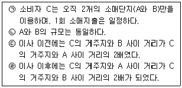
- 4배로 증가
- 5배로 증가
- 변화 없음
- 5분의 1로 감소
- 4분의 1로 감소
(정답률: 57%)
29. 다음 소매업종 중에서 매장면적당 지대가 가장 싸고, 최고가 지대에서 가장 멀리 떨어져 입지하는 업종은?
- 고급가구점
- 숙녀복점
- 종묘상, 화훼도매상
- 신사복점
- 백화점, 전문품점
(정답률: 77%)
30. 다음 중 상권분석의 한 방법인 유추법(analog method)과 별 관련이 없는 것은?
- CST(customer spotting technique)
- 애플바움(Applebaum)
- 정성적 상권분석
- 확률모형
- 유사한 기존 점포
(정답률: 58%)
31. 주거, 업무, 여가생활 등의 활동을 동시에 수용하는 건물을 의미하는 복합용도개발이 필요한 이유로서 가장 옳지 않은 것은?
- 도심지의 쇠락을 막고 주거와 상업, 업무의 균형을 이루기 위해서
- 신시가지와의 균형발전과 신시가지의 행정수요를 경감하기 위해서
- 도시내 상업기능만의 급격한 증가현상을 피하고 도시의 균형적 발전을 위하여
- 도심지의 활력을 키우고 다양한 삶의 장소로 바꾸기 위해서
- 도심의 공동화를 막기 위해서
(정답률: 50%)
32. 동종 업종의 점포들이 특정 지역에 몰려 있어서 집객력 즉, 고객유인효과가 감소하는 현상을 설명하는 입지원칙으로 옳은 것은?
- 고객차단원칙
- 보충가능성의 원칙
- 동반유인원칙
- 점포밀집원칙
- 접근가능성원칙
(정답률: 68%)
33. 해당 지역의 지역형 백화점 뿐만 아니라 부도심 및 도심 백화점까지 포함하여 특정지역에 위치한 백화점의 상권 경쟁구조를 분석하는 방법으로 옳은 것은?
- 업태별 경쟁구조 분석
- 업종내 경쟁구조 분석
- 잠재경쟁구조 분석
- 경쟁 보완관계 분석
- 위계별 경쟁구조 분석
(정답률: 49%)
34. 토지의 이용 및 건축물의 용도, 건폐율, 용적률, 높이 등에 대한 국토계획법과 관련한 설명으로 옳지 않은 것은?
- 도시지역과 취락지역은 용도지역의 종류들이다.
- 도시지역은 주거지역, 상업지역, 공업지역, 녹지지역으로 구분한다.
- 용도지구는 용도지역의 제한을 강화하거나 완화하여 적용함으로써 용도지역의 기능 증진을 도모하는 것이다.
- 경관지구, 미관지구, 고도지구 등은 용도지구의 종류들이다.
- 용도구역은 용도지역 및 용도지구의 제한을 강화하거나 완화하여 이들을 보완하는 역할을 한다.
(정답률: 32%)
35. 확률적 점포선택모형 중 하나인 Huff모형을 이용하여 각 점포에 대한 선택확률을 계산할 때 필요한 정보가 아닌 것은?
- 소비자가 고려하는 전체 점포의 수
- 소비자가 방문할 가능성이 있는 각 점포의 매장면적
- 소비자와 각 점포까지의 이동시간 또는 거리
- 점포의 매장면적에 대한 소비자의 민감도 계수
- 점포별로 추정한 거리에 대한 소비자의 민감도 계수
(정답률: 23%)
36. 점포를 건축하기 위해 필요한 토지와 관련된 설명으로서 옳지 않은 것은?
- 획지란 인위적·자연적·행정적 조건에 따라 다른 토지와 구별되는 일단의 토지이다.
- 획지는 필지나 부지와 동의어이며 획지의 형상에는 직각형, 정형, 부정형 등이 있다.
- 각지는 일조와 통풍이 양호하지만 소음이 심하며 도난이나 교통피해를 받기 쉽다.
- 각지는 출입이 편리하며 시계성이 우수하여 광고선전의 효과가 높다.
- 각지는 획지 중에서도 2개 이상의 가로각(街路角)에 해당하는 부분에 접하는 토지이다.
(정답률: 43%)
37. 임대료의 차이를 무시할 때, 여러 층으로 구성된 쇼핑몰에서 여성의류전문점의 입지로서 가장 적합한 곳은?
- 쇼핑센터 밖에 위치한 인근 스트립센터 안의 점포
- 주요 앵커스토어의 하나인 백화점에 근접한 점포
- 남성의류전문점들이 주로 입점한 층의 중앙에 위치한 점포
- 다른 여성의류전문점들과 멀리 떨어져있는 점포
- 여성의류전문점은 여러 층으로 구성된 쇼핑몰에는 입점하면 안 되는 점포유형이다.
(정답률: 70%)
38. 일부 소매업체는 동일한 상권 안에 여러 개의 점포를 출점한다. 연매출 1,000억원을 올리는 점포 한 개보다 750억원을 올리는 두 개의 점포를 출점하는 것이 더 이익이라는 논리이다. 다음 중 이런 소매업체의 논리에 해당하지 않는 것은?
- 개별점포의 이익보다 소매업체 전체의 이익을 우선해야 한다.
- 자기 점포보다 프랜차이즈 전체의 이익을 우선해야 가맹점주에게도 이익이다.
- 상권이 포화될 때까지는 새 점포를 개설할 때마다 업체의 전체 매출이 증가한다.
- 문제 속에 기술된 상권에 하나의 점포만을 개설하면, 고객서비스 품질이 낮아진다.
- 이 상권에 하나의 점포만 개설하면, 업체의 영업실적은 시장잠재력에 미치지 못한다.
(정답률: 39%)
39. 아래 글상자 속에는 해외에 점포를 개설할 때의 입지 및 상권분석의 단위들이 기술되어 있다. 다음 중 소매점이 입지를 선정할 때 실시하는 분석단위들을 포함하고 있는 것은?
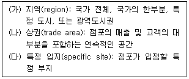
- (가)
- (나)
- (가), (나)
- (나), (다)
- (가), (나), (다)
(정답률: 74%)
40. 아래의 글상자는 점포의 매매와 임대차시에 반드시 확인해야 하는 공적서류 즉, 부동산 공부서류(公簿書類)에 대한 내용이다. ㉠~㉤에 해당하는 부동산 공부서류를 그 순서대로 올바르게 나열한 것은?
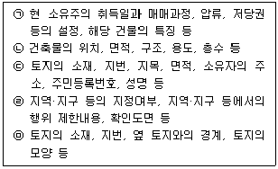
- 등기사항전부증명서 – 토지이용계획확인원 – 지적도 - 건축물대장 – 토지대장
- 건축물대장 - 등기사항전부증명서 – 지적도 – 토지이용계획확인원 – 토지대장
- 등기사항전부증명서 – 건축물대장 – 토지이용계획확인원 – 지적도 – 토지대장
- 건축물대장 - 등기사항전부증명서 – 토지이용계획확인원 – 토지대장 – 지적도
- 등기사항전부증명서 – 건축물대장 – 토지대장 – 토지이용계획확인원 - 지적도
(정답률: 52%)
41. 아래 글상자의 ㉠, ㉡, ㉢에 들어갈 용어를 그 순서대로 올바르게 나열한 것은?
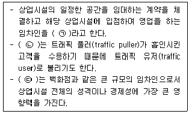
- 트래픽 풀러(traffic puller) - 서브키테넌트(sub-key tenant) - 앵커스토어(anchor store)
- 테넌트 믹스(tenant mix) - 서브키테넌트(sub-key tenant) - 핵점포(key tenant)
- 테넌트(tenant) - 서브키테넌트(sub-key tenant) - 트래픽 풀러(traffic puller)
- 테넌트 믹스(tenant mix) - 일반테넌트(general tenant) - 핵점포(key tenant)
- 테넌트(tenant) - 일반테넌트(general tenant) - 앵커 스토어(anchor store)
(정답률: 58%)
42. 입지유형에 따른 일반적 상권특성에 대한 설명으로 옳지 않은 것은?
- 중심지체계에서 도심상권은 상대적으로 소비자들의 평균 체류시간이 길다.
- 중심업무지구(CBD)는 주간과 야간의 인구차이가 뚜렷하다.
- 아파트단지 상권의 경우, 개별점포의 면적을 아파트세대수로 나누어 점포 입지의 적정성을 판단할 수 있다.
- 아파트단지 상권의 외부에서 구매하는 소비성향은 소형평형단지 보다 대형평형단지의 경우가 더 높다.
- 역세권상권은 대중교통이 집중되는 연결점이기 때문에 입체적 고밀도 개발이 이루어지는 경우가 많다.
(정답률: 39%)
43. 점포의 상권과 입지를 구분하여 설명할 때 다음 중 연결이 바르지 않은 것은?
- 상권은 점포의 매출이 발생하는 지역범위로 볼 수 있다.
- 상권의 크기는 입지의 매력도에 따라 커지므로 서로 비례관계가 성립한다.
- 상권의 평가항목에는 소비자의 분포범위, 유효수요의 크기 등이 있다.
- 입지조건의 평가항목에는 주차장, 지형, 층수, 편의 시설, 층고, 임대료 등이 있다.
- 입지는 범위(boundary), 상권은 지점(point)으로 비유하여 표현하기도 한다.
(정답률: 70%)
44. 상권의 힘 또는 상권의 크기와 활성화 정도를 의미하는 상권력과 관련된 설명으로 내용이 옳지 않은 것은?(문제 오류로 가답안 발표시 4번으로 발표되었지만 확정답안 발표시 4, 5번이 정답처리 되었습니다. 여기서는 가답안인 4번을 누르시면 정답 처리 됩니다.)
- 상권력에 영향을 미치는 요소에는 지형지세, 경쟁정도, 교통망과 도로조건, 집객시설의 유무 등이 있다.
- 도시지역에서 최근 상권력에 가장 큰 영향을 미치는 교통망으로는 지하철이 있으며, 지하철역 주변에 상권이 형성되면 역세권상권으로 볼 수 있다.
- 복수의 상권이 경쟁하는 상황에서는 일반적으로 란체스터법칙이 적용되는데 이는 상권크기가 큰 곳이 상대적으로 번성하게 되는 현상을 설명해준다.
- 점포의 밀집도가 상권력에 영향을 미치는데 동일 상권내에 분포하는 점포수가 적을수록 상권력이 강해진다.
- 도시의 중심지에 집객시설이 집중되는 경우가 많은데 학교나 종합운동장, 대형병원 같은 시설은 상권을 단절시켜 집객시설로 볼 수 없는 경우가 많다.
(정답률: 78%)
45. 유통산업발전법에 의거한 소매점포의 개설 및 입지에 관한 내용으로 옳지 않은 것은?
- 대규모점포를 개설하려는 자는 영업을 시작하기 전에 특별자치시장·시장·군수·구청장에게 등록하여야 한다.
- 준대규모점포를 개설하려는 자는 영업을 시작하기 전에 특별자치시장·시장·군수·구청장에게 등록하여야 한다.
- 전통상업보존구역에 준대규모점포를 개설하려는 자는 영업을 시작하기 전에 상권영향평가서 및 지역협력계획서를 첨부하여 등록하여야 한다.
- 대규모점포등의 위치가 전통상업보존구역에 있을 때에는 등록을 제한할 수 있다.
- 대규모점포등의 위치가 전통상업보존구역에 있을 때에는 등록에 조건을 붙일 수 있다.
(정답률: 44%)
3과목: 유통마케팅
46. 아래 글상자에서 (㉠)~(㉣)에 해당하는 용어를 순서대로 올바르게 나열한 것은?
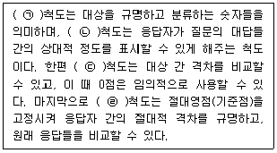
- ㉠ 명목 - ㉡ 서열 - ㉢ 비율 - ㉣ 등간
- ㉠ 명목 - ㉡ 서열 - ㉢ 등간 - ㉣ 비율
- ㉠ 명목 - ㉡ 비율 - ㉢ 등간 - ㉣ 서열
- ㉠ 서열 - ㉡ 등간 - ㉢ 명목 - ㉣ 비율
- ㉠ 서열 - ㉡ 명목 - ㉢ 비율 - ㉣ 등간
(정답률: 47%)
47. 아래 글상자에서 설명하는 이 용어로 가장 적합한 것은?
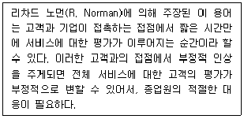
- 평가의 순간(Moment of Evaluation)
- 고객맞춤화의 순간(Moment of Customization)
- 진실의 순간(Moment of Truth)
- 탐색의 순간(Moment of Search)
- 표준화의 순간(Moment of Standardization)
(정답률: 53%)
48. 패러슈라만(Parasuraman) 등이 제시한 서비스 품질(SERVQUAL)의 5가지 차원에 해당하지 않는 것은?
- 유형성(tangibles)
- 편의성(convience)
- 반응성(responsiveness)
- 확신성(assurance)
- 공감성(empathy)
(정답률: 40%)
49. 고객관계관리(CRM)에서 고객가치를 평가하는 척도에 해당하지 않는 것은?
- 지갑점유율
- 고객활동척도
- RFM분석
- 고객생애가치
- 경쟁사고객 확보율
(정답률: 62%)
50. 가격결정방식에 대한 설명으로 옳지 않은 것은?
- 가격결정을 위해서는 마케팅 수익목표, 원가, 경영전략과 같은 내부요인을 고려해야 한다.
- 가격결정을 위해서는 시장의 수요 및 경쟁과 같은 외부요인을 고려해야 한다.
- 구매가격에 일정 이익률을 반영하여 판매가격을 결정하는 방식은 원가기준 가격결정이다.
- 상품에 대한 소비자의 지각가치에 따라 가격을 결정하는 방식은 수요기준 가격결정이다.
- 시장의 경쟁강도 및 독과점과 같은 경쟁구조에 따라 가격을 결정하는 방식은 가격차별 가격결정이다.
(정답률: 39%)
51. 매장에서 발생하는 손실의 유형으로 가장 부적합한 것은?
- 식품 등을 폐기할 때 발생하는 폐기손실
- 매장에 상품이 준비되지 않아서 발생하는 판매기회손실
- 실제 재고조사 후 장부상의 재고액과 실제 재고액의 차이로 인한 재고조사손실
- 제품의 가격을 인하함으로써 발생하는 가격인하손실
- 유행의 변화로 인해 성장기 상품이 쇠퇴기 상품으로 변화하는 상품회전율손실
(정답률: 54%)
52. 아래 글상자의 ㉠과 ㉡에 들어갈 용어를 순서대로 올바르게 나열한 것은?
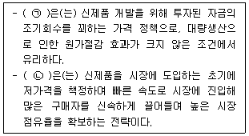
- ㉠ skimming pricing policy
㉡ penetration pricing policy - ㉠ skimming pricing policy
㉡ two-party price policy - ㉠ penetration pricing policy
㉡ bundling price policy - ㉠ penetration pricing policy
㉡ two-party price policy - ㉠ two-party price policy
㉡ captive pricing
(정답률: 61%)
53. 상품의 유형에 관한 설명으로 옳지 않은 것은?
- 편의품은 소비자들이 구매욕구를 느낄 때 별다른 노력을 기울이지 않고도 구매할 수 있어야 한다.
- 선매품의 경우 구매 전 제품 간 비교를 통해 최적의 구매가 발생한다.
- 고급향수, 스포츠카 및 디자이너 의류는 전문품에 해당한다.
- 선매품에는 가구나 냉장고 등이 포함되며, 편의품에 비해 구매빈도가 그다지 높지 않다.
- 전문품은 상대적으로 고가격이기 때문에 지역별로 소수의 판매점을 통해 유통하는 선택적 유통경로전략이 유리하다.
(정답률: 62%)
54. 아래 글상자에서 설명하는 서비스 회복을 위한 공정성 차원으로 옳은 것은?
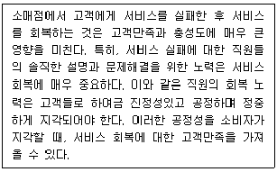
- 절차적 공정성
- 상호작용 공정성
- 보증 공정성
- 분배적 공정성
- 결과적 공정성
(정답률: 57%)
55. 풀 전략(pull strategy)과 푸시 전략(push strategy)에 대한 설명으로 옳지 않은 것은?
- 제조업자가 자신의 표적시장을 대상으로 직접 촉진하는 것은 풀 전략이다.
- 풀 전략은 제조업자 제품에 대한 소비자의 수요를 확보함으로써, 유통업자들이 자신의 이익을 위해 제조업자의 제품을 스스로 찾게 만드는 전략이다.
- 푸시 전략은 제조업자가 유통업자들에게 직접 촉진하는 전략이다.
- 제조업체가 중간상을 상대로 인적판매, 구매시점 디스플레이를 제공하는 것은 푸시전략이다.
- 일반적으로 푸시전략의 경우 인적 판매보다 TV광고가 효과적이다.
(정답률: 64%)
56. 아래 글상자의 사례 기업들이 실행한 소매점 포지셔닝 전략의 유형으로 가장 적합한 것은?
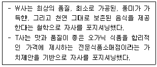
- 사용상황에 의한 포지셔닝
- 제품군에 의한 포지셔닝
- 제품속성에 의한 포지셔닝
- 제품사용자에 의한 포지셔닝
- 경쟁적 포지셔닝
(정답률: 74%)
57. 아래 글상자의 기업(V사)이 자사의 여러 브랜드에서 공통적으로 사용한 시장세분화 방법으로 가장 적합한 것은?
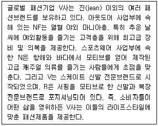
- 지리적 세분화
- 인구통계학적 세분화
- 행동적 세분화
- 생애가치 세분화
- 심리묘사적 세분화
(정답률: 30%)
58. 표적시장 선정에 대한 설명으로 가장 옳지 않은 것은?
- 세분시장들에 대한 평가가 수행된 뒤 기업은 어떤 시장을 공략할지, 몇 개의 세분시장을 공략할 것인가의 문제를 해결하는데, 이를 표적시장 선택이라고 한다.
- 비차별적 마케팅은 세분시장 간의 차이를 무시하고 하나의 제품으로 전체시장을 공략하는 전략이다.
- 비차별적 마케팅 전략을 구사하는 기업은 소비자들간의 차이보다는 공통점에 중점을 두며, 다수의 구매자에게 소구(訴求)하기 위해 다양한 마케팅 프로그램으로 시장을 공략한다.
- 차별적 마케팅은 여러 개의 표적시장을 선정하고 각각의 표적시장에 적합한 마케팅전략을 개발하여 적용하는 전략이다.
- 집중마케팅전략은 기업의 자원이 한정되어 있는 경우에 주로 사용된다.
(정답률: 42%)
59. 매력적인 세분시장을 충족시키는 조건으로 옳지 않은 것은?
- 충분한 시장규모와 수익성을 가져야 한다.
- 높은 시장성장률 등 잠재력을 가지고 있어야 한다.
- 경쟁사 대비 확실한 경쟁우위를 가져야 한다.
- 자사의 역량과 자원에 적합해야 한다.
- 세분시장 내 고객군의 선호가 다양해야 한다.
(정답률: 63%)
60. 판매촉진전략에 대한 설명으로 옳지 않은 것은?
- 판매촉진은 제품이나 서비스의 판매를 촉진하기 위한 단기적 활동을 말한다.
- 판매촉진은 기업이 설정하는 목표에 따라 소비자, 중간상, 판매원 등을 대상으로 실시한다.
- 소비자 판촉에는 가격할인, 무료샘플, 쿠폰제공 등이 포함된다.
- 대개 중간상 판촉은 소비자 판촉에 비해 비교적 적은 비용이 든다.
- 영업사원 판촉은 보너스와 판매경쟁 등을 포함한다.
(정답률: 62%)
61. 아래 글상자에서 설명하는 매입방식으로 옳은 것은?
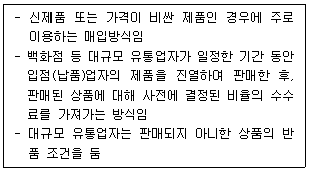
- 정기매입
- 특약매입
- 직매입
- 임대을
- 전환매입
(정답률: 61%)
62. VMD(Visual Merchandising)와 VP(Visual Presentation)에 대한 설명으로 가장 옳지 않은 것은?
- VMD는 고객들의 구매욕구를 자극할 수 있도록 시각적인 요소를 연출하고 관리하는 활동이다.
- VMD는 레이아웃이나 진열은 물론 건물 외관, 쇼윈도우, 조명 등 모든 시각적인 요소들을 관리의 대상으로 하는 포괄적인 개념이다.
- VP는 점포의 쇼윈도나 매장 입구에서 유행, 인기, 계절 상품 등을 제안하여 고객이 매장으로 접근하게 한다.
- VP를 통해 중점상품과 중점테마에 따른 매장 전체 이미지를 보여주기 때문에 상품보다는 진열기술이 중요하다.
- VP는 벽면 및 테이블 상단에서 보여주는 PP(Point of Sales Presentation) 또는 행거, 선반 등에 상품이 진열된 IP(Item Presentation)와는 다르게 매장과 상품의 이미지를 높이는데 주력한다.
(정답률: 58%)
63. 크로스 머천다이징(Cross Merchandising)에 대한 설명으로 옳지 않은 것은?
- 소비자가 함께 구매할 것으로 예상되는 상품들을 가까이 진열한다.
- 사재기하는 비중이 높은 상품이나 용량이 큰 상품에 적합하다.
- 동시구매를 노리는 방법으로 객단가를 높일 수 있으며 라이프스타일 제안이 가능하다.
- 백화점 신사복 코너에서 넥타이와 와이셔츠를 함께 구성하여 진열하는 경우가 해당된다.
- 의류업계의 코디네이트 진열과 동일한 개념이다.
(정답률: 76%)
64. 점포의 레이아웃 및 진열에 대한 설명으로 가장 옳지 않은 것은?
- 주 통로 주변에는 점포의 개성을 나타내는 주력상품을 위주로 진열한다.
- 격자형 레이아웃은 통로에 반복적으로 상품을 배치해야 더 효율적이다.
- 프리 플로(free flow)형 레이아웃은 집기를 추가하거나 제거하는 방법으로 동선을 구성한다.
- 루프(loop)형 레이아웃은 주요 통로를 통해 동선을 유도하여 진열제품을 최대한 노출시킨다.
- 직선형으로 병렬 배치하는 부티크(boutique) 레이아웃은 지하상가나 아케이드매장에 주로 사용한다.
(정답률: 47%)
65. 점포의 구성요소로 가장 부적합한 것은?
- 점포의 시장점유율
- 목표고객에게 소구(訴求)하는 상품구성
- 고객에게 부합하는 가격정책
- 점포입지의 편리성
- 점포 외부 이미지
(정답률: 50%)
66. 상품 유형에 따른 진열방법으로 가장 옳지 않은 것은?
- 고객이 많이 찾는 중점판매상품은 엔드매대에 대량 진열하여 판매한다.
- 잘 팔리는 고회전의 상품은 페이싱(facing)을 넓혀 고객의 눈에 잘 띄게 한다.
- 다른 상품으로 대체가 불가하나 판매량이 적은 구색상품은 진열량을 제한한다.
- 이익 금액이 높아 육성해야 하는 상품은 POP나 시식판매로 판매를 촉진한다.
- 기간별로 판매량이 달라지는 시즌 상품은 다른 상품 카테고리와 동일한 공간에 진열하여 매장에 변화를 준다.
(정답률: 64%)
67. 개방형 유통경로에 적합한 소비자 구매행동으로 가장 옳은 설명은?
- 가장 가까운 상점에서 가장 손쉽게 구할 수 있는 상품 중에서 선택한다.
- 고객이 원하는 특정 상품을 판매하는 가장 가까운 상점에서 특정 상표를 구매한다.
- 특정 상표에 대해서 상표선호도를 가지고 있으나 서비스와 가격면에서 보다 유리한 상점에서 구매한다.
- 특정 상점에서 구매하겠다는 결정은 이미 내리고 있으나 상표에 대해서는 무관심하다.
- 특정 상점에서 구매하기를 원하지만 아직 어떤 상품을 구입할지 확정하지 않아, 그 상점에 진열된 것 중에서 선택하고자 한다.
(정답률: 52%)
68. 유통업체가 자체 브랜드(Private Brand: PB)를 통해 얻을 수 있는 이점으로 옳지 않은 것은?
- 소매업체는 PB를 통해 상대적으로 낮은 가격에 높은 마진을 얻을 수 있다.
- PB를 통해 다른 유통업체와의 직접적인 가격경쟁을 피할 수 있다.
- PB가 소비자로부터 사랑받을 경우 점포충성도를 증가시킬 수 있다.
- 인기 있는 PB제품 뿐만 아니라 다른 제품들도 함께 구매하도록 유도하여 매출액을 증진시킬 수 있다.
- 대형마트는 대개 PB를 유명 제조업체 브랜드와 유사한 브랜드명을 사용함으로써 적은 비용으로 소비자에게 PB를 인식시키려 한다.
(정답률: 58%)
69. 표적집단면접법(FGI)을 활용하기에 가장 부적합한 유통마케팅조사 상황은?
- 어떤 정보를 획득해야 할지 잘 모르는 경우
- 인과관계에 대한 가설을 검증해야 하는 경우
- 어떤 현상의 원인이 되는 문제를 정확하게 모르는 경우
- 소비자들의 내면적 욕구, 태도, 감정을 파악해야 하는 경우
- 계량적 조사로부터 얻은 결과에 대한 구체적인 이해가 필요한 경우
(정답률: 35%)
70. 수요예측을 위한 조사기법에 해당하지 않는 것은?
- 델파이 조사법
- 시계열분석 방법
- 박스젠킨스 방법
- 확산모형 방법
- 상품/시장 매트릭스 기법
(정답률: 33%)
4과목: 유통정보
71. 정보화 사회의 역기능에 대한 설명으로 가장 옳지 않은 것은?(문제 오류로 가답안 발표시 2번으로 발표되었지만 확정답안 발표시 2, 4번이 정답처리 되었습니다. 여기서는 가답안인 2번을 누르시면 정답 처리 됩니다.)
- 컴퓨터 범죄 및 사생활 침해 현상이 증가하고 있다.
- 인간과 기계는 엄연히 구별되는 독립적인 실체로서 인식되고 있다.
- 정보기술이 발전하지 못한 국가들은 문화적 정체성을 상실할 수 있다.
- 국가 간의 정보 유통을 획기적으로 확장시킴으로써 국가 경쟁력 강화가 요구되고 있다.
- 사회 전체가 단일 네트워크로 묶이다 보니 이에 따른 사회적 위험 또한 증가하고 있다.
(정답률: 75%)
72. 아래 글상자의 내용에 부합되는 배송서비스 관련 정보기술로 옳은 것은?
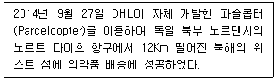
- 드론
- 비콘
- 챗봇
- 키바로봇
- 자율주행자동차
(정답률: 79%)
73. 바코드 기술에 대한 설명으로 옳지 않은 것은?
- 유통매장에서 이용하는 바코드 시스템의 광학 스캐너는 디지털 신호 뿐만 아니라 아날로그 신호를 읽을 수 있는 입력장치이다.
- 유통매장에서 이용하는 바코드 시스템은 기업의 재고관리에 도움을 준다.
- 바코드 시스템은 UPC(universal product code)를 따르고 있다.
- 바코드는 국가 정보, 제조업체 정보와 제품 정보를 포함하고 있다.
- 바코드에는 상품의 포장지에 막대 모양의 선과 숫자를 이용해 상품 정보를 표시한다.
(정답률: 59%)
74. 조직에 필요한 정보를 수집하고 공유하는데 있어, 내·외부의 비정형적 데이터를 자동으로 수집하는 기술로 옳지 않은 것은?
- 웹크롤링(web crawling)
- 센싱(sensing)
- RSS리더(reader)
- 로그수집기
- 맵리듀스(MapReduce)
(정답률: 45%)
75. 노나카의 지식변환과정에 대한 설명으로 옳지 않은 것은?
- 지식변환은 지식획득, 공유, 표현, 결합, 전달하는 창조프로세스 매커니즘을 지칭한다.
- 지식변환은 암묵지와 형식지의 상호작용으로 원천이 되는 지와 변환되어 나온 결과물로서의 지의 축을 이루는 매트릭스로 표현된다.
- 지식변환과정은 개인, 집단, 조직의 차원으로 나선형으로 회전하면서 공유되고 발전해 나가는 창조적 프로세스이다.
- 사회화는 암묵지에서 암묵지로 변환하는 과정으로 주로 경험을 공유하면서 지식이 전수되고 창조가 일어난다.
- 4가지 지식변환과정은 각기 독립적으로 진행되며 상호배타적으로 작용한다.
(정답률: 58%)
76. 균형성과지표(BSC)와 관련된 내용으로 옳지 않은 것은?
- 캐플런과 노턴에 의해 정립된 이론이다.
- 재무적 관점은 정량화된 수치로 표현하는데 재무적 측정지표들을 이용한다.
- 조직의 장기적인 성장과 발전을 도모하고 지속적인 개선을 이루어내기 위해 외부프로세스 관점을 제시한다.
- 시장점유율, 고객확보율, 고객수익성 등은 대표적인 고객관점에서 목표와 측정지표를 제시한다.
- 지식경영과 가장 밀접한 관점은 학습 및 성장관점으로 다른 관점에서 설정한 목표치를 달성할 수 있도록 중요한 기반을 제공한다.
(정답률: 53%)
77. 아래 글상자가 설명하는 용어로 옳은 것은?
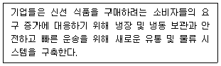
- 콜드체인(cold chain)
- 공급체인(supply chain)
- 수요체인(demand chain)
- 블록체인(block chain)
- 스노우체인(snow chain)
(정답률: 71%)
78. 유통정보시스템의 도입효과에 대한 설명으로 가장 옳지 않은 것은?
- 주문, 선적, 수취의 정확성을 꾀할 수 있다.
- 리드타임(lead time)이 대폭 증가하여 충분한 재고를 확보할 수 있다.
- 기업 간에 전자연계를 통해 거래함으로써 서류 작업을 대폭 축소시킬 수 있다.
- 기업 간에 전자연계를 이용하면 서류업무에 따른 관리인력을 축소시킬 수 있다.
- 기업 간의 연계는 공급자로 하여금 수요자의 정확한 요구사항을 파악할 수 있게 해준다.
(정답률: 75%)
79. 아래 글상자의 ( )안에 들어갈 용어로 가장 적절한 것은?
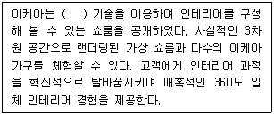
- 가상현실
- 옴니채널
- 증폭현실
- 공간가상화
- 3차원 랜더링
(정답률: 56%)
80. 침입탐지시스템의 주요기능과 가장 거리가 먼 것은?
- 데이터의 수집
- DB 백업과 복구 및 이력관리
- 데이터의 필터링과 축약
- 오용 또는 이상 탐지
- 책임 추적성과 대응
(정답률: 39%)
81. 기업의 구매 방법과 구매 품목에 따라 유형을 구분할 때 넷 마켓플레이스에 속하지 않는 것은?
- 전자적 유통업자
- 사설 산업 네트워크
- 독립적 거래소
- 전자조달
- 산업 컨소시엄
(정답률: 27%)
82. 아래 글상자에서 설명하고 있는 기술로 올바른 것은?
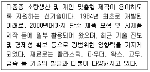
- 시뮬레이터
- 가상현실
- 증강현실
- 3D프린팅
- 3D모델링
(정답률: 73%)
83. 월드와이드웹(WWW)과 관련된 용어들에 대한 설명으로 가장 옳은 것은?
- WWW - 하이퍼 텍스트 마크업 언어를 이용하여 만들어진 문자, 그림, 오디오 그리고 비디오 문서를 통해 인터넷 정보에 접근할 수 있도록 한다.
- HTTP – 인터넷 프로토콜 웹브라우저는 URL을 이용하여 웹 페이지를 요구하고 보여주기 위한 통신규약이다.
- URL- 도메인 이름의 주인에게 그 사이트를 관리하고 이메일 용량을 주기위한 서비스이다.
- 애플릿 – 웹브라우저에서 실행되도록 복잡한 기능을 통합하여 구현한 대규모 프로그램이다.
- 웹브라우저 – 사용자로하여금 파일을 네트워크로 주고받을 수 있도록 지원하는 파일전송전용서비스이다.
(정답률: 52%)
84. 인터넷 서점의 시스템 구축을 위한 ERD(Entity Relationship Diagram)의 일부분을 나타낸 것으로 이에 대한 내용으로 가장 올바르지 않은 것은?
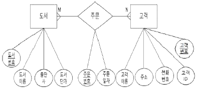
- 도서, 고객은 개체(entity)이다.
- 주문은 도서와 고객과의 관계에서 생성되는 정보를 표현한다.
- 밑줄이 그어진 항목은 키 속성 중에서 주키로 사용하기 위해 설계된 것이다.
- 주문번호를 통해 주문한 고객의 주소를 찾아갈 수 있도록 설계되어 있다.
- 주문의 물리 테이블 구성시 속성은 주문번호와 주문일자로만 구성된다.
(정답률: 52%)
85. 전자상거래 보안과 관련된 주요관점에 대한 설명이다. 글상자의 (가), (나)에 들어갈 용어로 가장 올바른 것은?
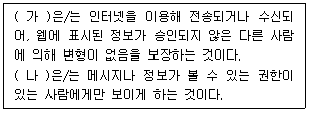
- 가: 인증, 나: 프라이버시
- 가: 가용성, 나: 기밀성
- 가: 부인방지, 나: 인증
- 가: 무결성, 나: 기밀성
- 가: 가용성, 나: 프라이버시
(정답률: 68%)
86. 전자상거래의 다양한 수익모델에 관한 설명 중 가장 올바르지 않은 것은?
- 광고를 노출시켜 광고주들로부터 광고료를 거둬들이는 광고수익모델
- 콘텐츠나 서비스를 제공하여 구독료를 거둬들이는 구독수익모델
- 거래를 가능하게 해주거나, 대행해주는 대가로 수수료를 받는 거래수수료 수익모델
- 제품이나 정보 서비스를 고객에게 직접 판매하여 수익을 얻는 판매수익모델
- 비즈니스 소개에 대한 수수료를 기반으로 하는 유통수익모델
(정답률: 65%)
87. 아래 글상자가 뜻하는 정보의 특성으로 가장 옳은 것은?
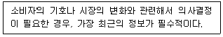
- 정보의 관련성
- 정보의 신뢰성
- 정보의 적시성
- 정보의 정확성
- 정보의 검증가능성
(정답률: 65%)
88. David and Olson이 제시한 정보시스템을 구성하는 요소에 대한 설명으로 가장 올바르지 않은 것은?
- 하드웨어 - 물리적인 컴퓨터 기기 및 관련된 기기
- 사람 - 시스템 분석가, 프로그래머, 컴퓨터 운용요원, 데이터 준비요원, 정보시스템 관리요원, 데이터 관리자 등
- 비용 - 정보시스템을 운영유지하는데 소요되는 재무자원
- 데이터베이스 - 응용 소프트웨어에 의하여 생성되고 활용되는 모든 데이터들의 집합체
- 소프트웨어 - 하드웨어의 동작과 작업을 지시하는 명령어의 모음인 프로그램 및 절차
(정답률: 39%)
89. 인트라넷의 특징으로 가장 옳지 않은 것은?
- 어떠한 조직 내에 속해 있는 사설 네트워크이다.
- 조직의 정보와 컴퓨팅 자원을 구성원들 간에 서로 공유하도록 지원한다.
- 개인별 사용자 ID와 암호를 부여하여 인증되지 않은 사용자로부터의 접근을 방지한다.
- 고객이나 협력사, 공급사와 같은 회사 외부사람들에게 네트워크 접근을 허용한다.
- 공중 인터넷에 접속할 때는 방화벽 서버를 통과한다.
(정답률: 75%)
90. 아래 글상자의 ( ) 안에 공통적으로 들어갈 가장 옳은 용어는?
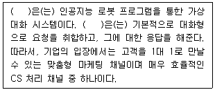
- 로봇
- 가상커뮤니티
- AI com
- 챗봇
- 컨시어지
(정답률: 76%)